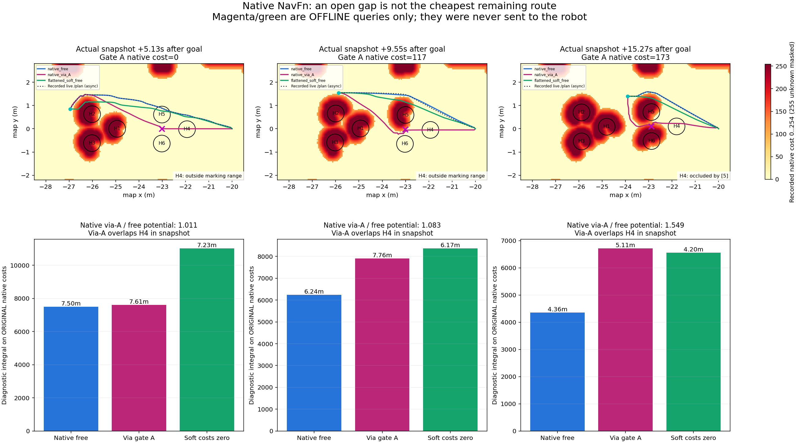

Vì sao đã sửa footprint mà robot vẫn đi vòng?
Đã xác nhận global planner NavFn chọn đường phía trên từ sớm. MPPI đang bám đường đó. Khi robot tới gần khe H5–H6, quay vào khe không còn là đường ngắn nhất từ vị trí hiện tại và còn chịu chi phí inflation. Hình học đủ rộng không đồng nghĩa planner sẽ chọn đi qua.
Đã kiểm tra bằng dữ liệu thật
Lượt mới dùng cùng cấu hình .17m radius / .45m inflation, trên RTX4060: tới đích31,36s, đường9,15m, sai số đích thật5,8cm; vẫn không qua khe A. YAML Nav2 và SDF camera khớp từng byte với lượt C trước đó.
Ghi thêm33 global costmap và152 local costmap nguyên bản uint8 (0–255), kiểm tra khớp byte với MCAP: PASS. 241 tests: OK, bỏ qua2 bài có điều kiện. Không đổi điều khiển, không ép waypoint.
NavFn đang ưu tiên đường nào?

Xanh dương: NavFn tính lại trên costmap nguyên bản. Chấm đen: global plan thực sự đã ghi. Hồng: truy vấn offline hai chặng qua tâm khe A. Xanh lá: tính trên bản sao đã bỏ chi phí mềm, vẫn giữ các ô253/254 và unknown255. Hồng và xanh lá chưa hề được gửi cho robot.
| Sau khi nhận goal | Cost tại tâm khe A | Đường tự chọn còn lại | Đường truy vấn qua A | Potential qua A / tự chọn |
|---|
| 5.13s | 0 | 7.50m | 7.61m | 1.011× |
| 9.55s | 117 | 6.24m | 7.76m | 1.083× |
| 15.27s | 173 | 4.36m | 5.11m | 1.549× |
Native cost253/254 là vùng cấm; cost173 ở tâm khe trong ảnh cuối vẫn thuộc vùng mềm. Tuy vậy, đường qua tâm khe dài hơn và tổng potential native cao hơn khoảng55% ở snapshot cuối. Ngay cả khi xóa chi phí mềm trong phép thử offline, đường tự chọn vẫn đi phía trên. Có cả ảnh hưởng của vị trí robot và hình học đường còn lại, không thể quy hết cho inflation.
Phép tính dùng thư viện NavFn Jazzy đang cài, không tự viết một planner khác. Đường tính lại khớp rất sát /plan đã ghi; ba giá trị khoảng cách điểm lớn nhất lần lượt khoảng0,00000035m,0,0565m,0,0128m. Snapshot và /plan không luôn cùng timestamp, nên đây là đối chiếu chẩn đoán.
Còn người phía sau khe thì sao?
Đường hồng chưa phải đường đi an toàn. Cả ba đường truy vấn qua tâm A đều chồng lên proxy H4 trong kiểm tra hình học tại snapshot. Ở các ảnh đầu, H4 còn ngoài tầm marking3m; ở ảnh cuối H4 cách2,47m nhưng bị H5 che hoàn toàn theo hình học cylinder. Ô tại tâm H4 trong global costmap vẫn bằng0.
NavFn chỉ biết những gì costmap đã quan sát. Global path có thể đi qua vùng chưa thấy người rồi được lập lại khi robot tới gần. Không được hiểu cost0 là bảo đảm toàn bộ không gian thật trống. GT chỉ dùng để đối chiếu trong báo cáo; không được đưa vào Nav2.
Lượt robot chạy thật có khoảng hở hình học bảo thủ nhỏ nhất tới người0,344m và cận dưới khoảng hở vật cản tĩnh0,929m. Chưa ghi lực tiếp xúc để chứng minh contact truth. Các đường offline giả định người đứng yên tại snapshot, không phải dự đoán va chạm tương lai.
Camera thật của lượt bổ sung
Camera Gazebo đã ghi, mã hóa lại VP8 có mất mát, phát4× từ một ảnh mỗi giây mô phỏng. Không có ảnh AI sinh.
Kết luận và bước tiếp theo
Đã sửa lệch kích thước/TF. Chưa có bằng chứng MPPI là nguyên nhân chính làm robot bỏ khe: global plan đã chọn đường vòng. Đây là hành vi phát sinh từ đường đi và costmap; chưa phải robot có chính sách hiểu nhóm đang trò chuyện.
Bước tiếp theo phù hợp là một bài test khe riêng, dùng hai vật cản cố định và cho robot xuất phát đối diện khe để đo khả năng đi qua của planner/MPPI. Sau đó mới quyết định có cần chỉnh tham số điều hướng. Cấu hình mặc định, dữ liệu cũ và mô hình classifier được giữ nguyên; chưa train WM/RL.
Kết quả native probe · Audit · Đối chiếu và SHA256 · Đường chạy thật · Kế hoạch trước khi chạy